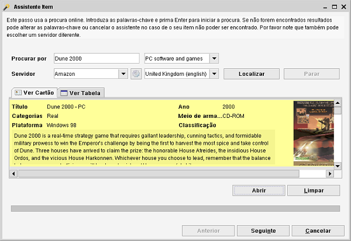
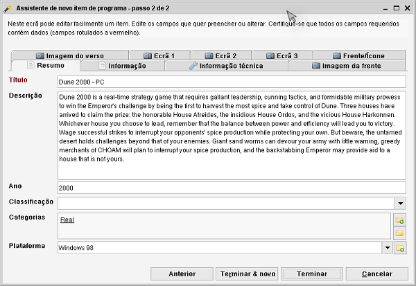

Assistente Novo item
Barra de ferramentas: primeiro ícone na lista
O assistente é a maneira mais fácil de adicionar um novo item. Tem ajuda e informação para
cada passo do assistente. Pode sair do assistente a qualquer altura clicando em Cancelar.
Passo 1
No primeiro passo pode usar a procura online para encontrar o seu item na Web.
Este passo usa a funcionalidade Procura online.
O passo será ignorado caso o módulo não tenha serviços online disponíveis.

Introduza o nome do item que procura na caixa Procurar por e clique em Localizar ou prima Enter para iniciar a procura.
Assim que o seu item seja encontrado, clique-o e clique em Seguinte.
Passo 2
Neste passo pode modificar a informação do item (manualmente). Esta secção é melhor explicada na ajuda do
Formulário de item.

Faça as suas modificações e clique em Terminar para gravar o item no Data Crow ou em Terminar & Novo para
gravar o item e reiniciar o assistente. Selecione Anterior se, por engano, escolheu o item errado no passo anterior, ou
clique em Cancelar para sair do assistente sem gravar nada.